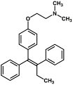

|
||||||||||||||||
| Research | |||||||||||||||
Overview Our research explores the relationships between the functions of protein molecules, their physical properties and their atomic level structures. Because all function derives from molecular structure, a comprehensive understanding of any biological system depends on an understanding of the structures and fundamental physical properties of the component protein molecules and the interactions between them. Our research focuses on biologically interesting and medically relevant systems and the protein molecules that comprise them, and seeks to foster an understanding of the physical underpinnings of function based on the physical properties of the apposite proteins. We employ an approach combining modern biophysical and molecular biology techniques. We emphasize the use of advanced biomolecular NMR spectroscopy, which is used to analyze the structures of proteins at high resolution, to study the motional dynamics and stabilities of proteins, and to monitor interactions between proteins and their ligands, including other proteins.
Transcription Regulation (supported by the NIH) One of the fundamental and most important mechanisms for gene regulation in higher organisms is regulation of gene transcription. In lower organisms, transcription regulation is even more important. In bacteria, for instance, nearly all gene regulation occurs at the transcriptional level. Transcription is catalyzed by the RNA polymerase multi-protein complex. This sophisticated molecular machine is in turn regulated by other protein molecules. Nuclear Hormone Receptor Activation and Breast Cancer Many hormone molecules bind specifically in the cytosol to proteins known as nuclear hormone receptors. Upon binding to their specific hormones, these hormone receptor proteins localize to the nucleus where they bind to specific DNA sequences and regulate gene expression. Thus, the ability of particular hormones to exert their effects occurs via this important class of proteins. A critical nuclear hormone receptor for human breast cancers and breast cancer therapy is the alpha isoform of the estrogen receptor, or estrogen receptor alpha. This receptor protein binds estrogen and regulates the expression of many genes. Importantly, this receptor protein is critical for maintenance and proliferation of breast cancers. Blocking the estrogen-dependent transcription activation activity of estrogen receptor alpha is one of the most common and successful ways to treat estrogen-dependent breast cancers. Nonsteroidal antiestrogens such as tamoxifen, the most widely prescribed antiestrogen chemotherapeutic, are very effective at inhibiting estrogen receptor alpha and the progression of breast cancers. Unfortunately, after time, antiestrogen therapy often quits working, and the cancers are said to have developed antiestrogen resistance. Despite the wealth of functional and structural information on estrogen receptor alpha, the molecular mechanism of estrogen receptor alpha activation is incomplete, as only recently has it been established that calcium-dependent activation by the important calcium signaling protein calmodulin is essential for estrogen-dependent Regulation of Microbial Biofilm Formation (supported by the NIH) Bacterial biofilms are complex structures comprised of bacterial colonies encased in a mucopolysaccharide. In these biofilms, bacteria are protected from harsh environments and they communicate with one another via intricate mechanisms (for instance quorum sensing) that enable them to coordinate their responses to external stimuli. Bacteria in biofilms often display increased resistance to antimicrobials (antibiotics). Biofilms are very important both environmentally and medically. Medically, biofilms are associated with many common infectious states. Dental plaques, many eye and ear infections, and infections of surgical implants are common examples of biofilm exacerbated bacterial infections. The bacterium Pseudomonas aeruginosa is the quintessential biofilm forming bacterium and opportunistic pathogen. Pseudomonas aeruginosa causes many common infections. However, chronic Pseudomonas aeruginosa infections of the lung are the most common cause of death in cystic fibrosis patients, underscoring the notoriety of this bacterium as a pathogen. There are many keys to the ability of Pseudomonas aeruginosa to colonize and survive in environments such as the cystic fibrosis lung and to thwart antibiotic regimes, including the ability to form biofilms. For our third core project, the long term goals are to identify and understand the details of the elaborate regulatory mechanisms utilized by Pseudomonas aeruginosa that result in biofilm formation and chronic infections of compromised individuals. Currently we are examining the structure, functions and properties of a protein molecule called AlgH and its role in alginate (a biofilm associated carbohydrate) production, biofilm formation and complex regulation. This protein molecule putatively serves important regulatory functions including regulating biofilm formation. |
||||||||||||||||
|
© The Laboratory of Dr. Jeffrey L. Urbauer, 2009 | ||||||||||||||||
 estrogen receptor alpha activity, and that the true active species is the complex between calmodulin and estrogen receptor alpha. This unexpected result has left a gap in our fundamental understanding of estrogen receptor alpha activation.
estrogen receptor alpha activity, and that the true active species is the complex between calmodulin and estrogen receptor alpha. This unexpected result has left a gap in our fundamental understanding of estrogen receptor alpha activation.